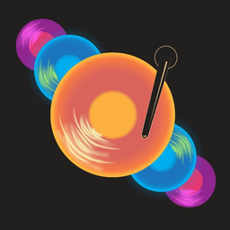
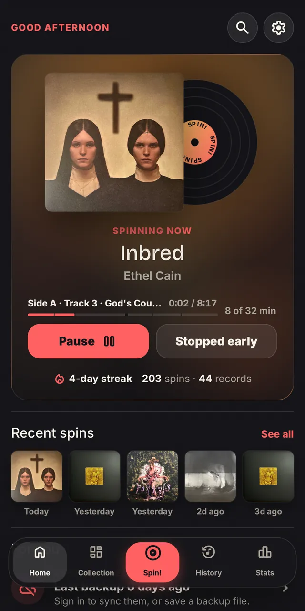
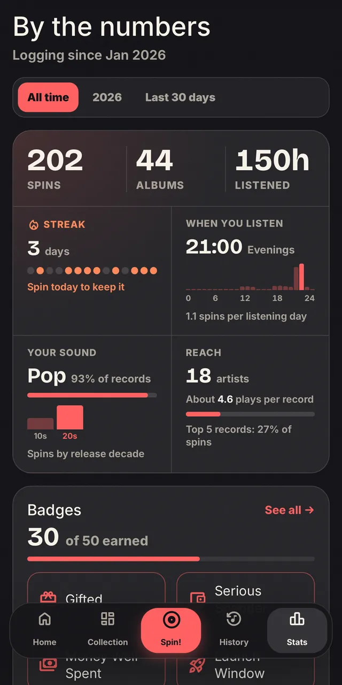
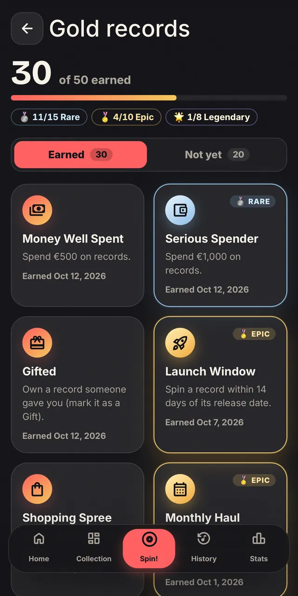

Your records,
your spins.
Spin! is a listening diary for record collectors, vinyl and CD alike. Put a record on, tap Spin!, and every play becomes part of your story: what you reach for, how often, and when.
Join the beta on Google Play Android now, iPhone later. Free.



What it does
- Log a spin in one tap
- Pick the record and press Spin!. Now Spinning follows along track by track, and for vinyl it nudges you when it's time to flip.
- Your shelf, in one place
- Add records by barcode or by hand, or bring your whole Discogs collection over in one go.
- Stats that mean something
- Most-played albums and artists, listening time, streaks, your favourite hour to spin.
- Gold records
- Badges for streaks, deep cuts, playing every album in a year, and a few surprises.
- Your year in records
- Every December, a recap of your listening year, ready to share.
- What you've spent
- Note what each record cost, gifts included, and see your collection add up.
Yours, and private
Your library stays on your device. Signing in is optional, and only syncs your records across your devices. No ads, no tracking, and your data is never sold.